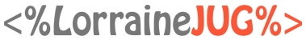
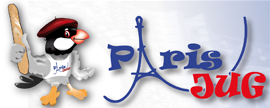

Communautés
Différentes communautés supportent Soft-Shake pour cette première édition. Nous les remercions.
Le GenevaJUG est un groupe d'utilisateurs Java ayant pour but de réunir les acteurs du langage afin d'échanger des idées et de discuter des avancées technologiques de la plateforme Java.
Nous nous rencontrons le dernier mardi du mois. Les réunions sont gratuites, ouvertes à tous et consistent en une présentation technique, une démonstration d'un produit, ou une table ronde. Après la réunion nous nous retrouvons pour un échange informel autour d'un verre et d'un mini-buffet.
Contact: team@genevajug.ch
Duchess Fr est un réseau social féminin de développeurs sur la plateforme Java
Son but est de donner plus de visibilité aux femmes de ce secteur, de les inciter à participer à des conférences et de coopérer sur des projets d'auto-formation ou d'évangélisation.
Contact: duchessfr@gmail.com
 Alpes Jug est un groupe d’utilisateurs Java de la région grenobloise ayant pour but de réunir les acteurs du langage (professionnels, communautés open source, institutions, étudiants, enseignants…) afin d’échanger des idées et discuter des avancées technologiques de la plateforme Java. Nous nous rencontrons au moins une fois par mois. Les réunions sont gratuites, ouvertes à tous et consistent en une présentation technique, une démonstration d’un produit, une table ronde, une séance de travaux pratiques, ou toute autre formule à inventer ! Après la réunion nous nous retrouvons pour un échange informel autour d’un verre.
Alpes Jug est un groupe d’utilisateurs Java de la région grenobloise ayant pour but de réunir les acteurs du langage (professionnels, communautés open source, institutions, étudiants, enseignants…) afin d’échanger des idées et discuter des avancées technologiques de la plateforme Java. Nous nous rencontrons au moins une fois par mois. Les réunions sont gratuites, ouvertes à tous et consistent en une présentation technique, une démonstration d’un produit, une table ronde, une séance de travaux pratiques, ou toute autre formule à inventer ! Après la réunion nous nous retrouvons pour un échange informel autour d’un verre.
Contact: Emmanuel Hugonnet
Lorraine JUG a pour but de réunir les utilisateurs des technologies Java de Lorraine. Hébergé par l'ESIAL à Nancy, nous voulons créer des ponts entre professionnels et étudiants en partageant nos expériences autour de Java.
Le Lorraine JUG organise environ 6 évènements par an, si vous êtes intéressés pour faire une présentation, envoyez nous un mail à info@lorrainejug.org.
Le Paris JUG est un Java User Group français qui rassemble les développeurs Java pour échanger et parler des nouveautés. Nous nous réunissions le second Mardi de chaque mois (sauf en Août). Les réunions sont ouvertes à tous et consistent généralement en une présentation par des développeurs, la communauté open source, un éditeur ou des universitaires.
Contact: Antonio Goncalves